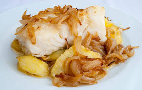
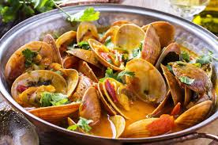
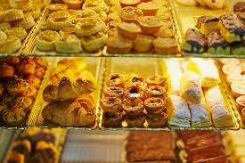

La cocina portuguesa combina tradición, productos frescos locales y la influencia de la historia marítima del país. Sus sabores intensos y recetas familiares hacen que cada plato sea único.

El bacalao es el plato nacional, con más de 365 formas de prepararlo. Entre las más famosas están Bacalhau à Brás, Bacalhau à Lagareiro y Bacalhau com Natas.

Portugal, al ser un país costero, ofrece mariscos frescos: percebes, camarones, almejas y pulpo. También son populares los pescados a la parrilla como sardinas y salmonetes.

Los pasteles de nata son los más conocidos, pero existen otros dulces típicos como Queijadas de Sintra, Travesseiros de Ovar y Pudim Abade de Priscos.
Portugal es famoso por sus vinos: Oporto, Madeira y Vinho Verde. También destacan bebidas tradicionales como la Ginjinha (licor de cereza) y la Aguardente (aguardiente local).